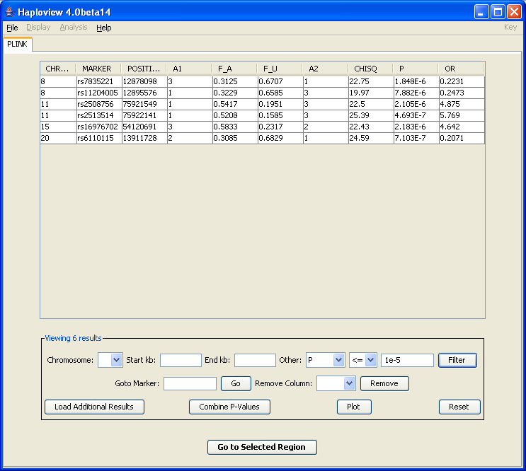

|  |
HaploviewThe controls at the bottom of this panel allow you to filter these results, or to load in additional results into the table (e.g. to compare association results along side genotyping rate and/or Hardy-Weinberg equilibrium test statistics In this case, we filter only for highly associated SNPs (p-values less than 1e-5).Previous | Next |